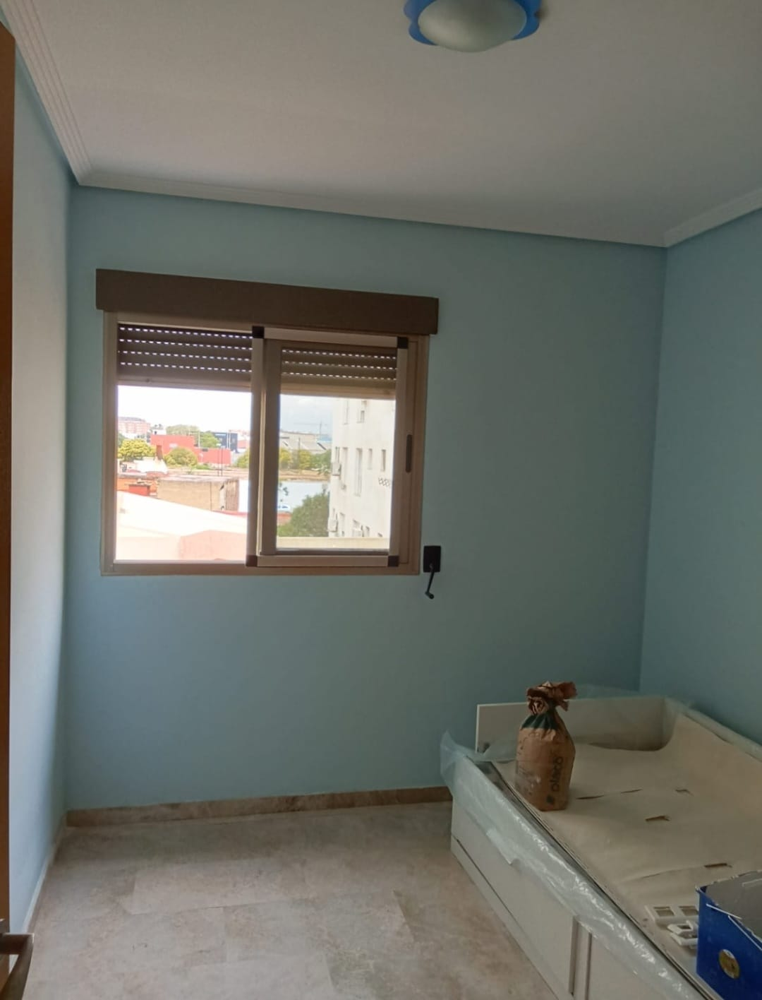
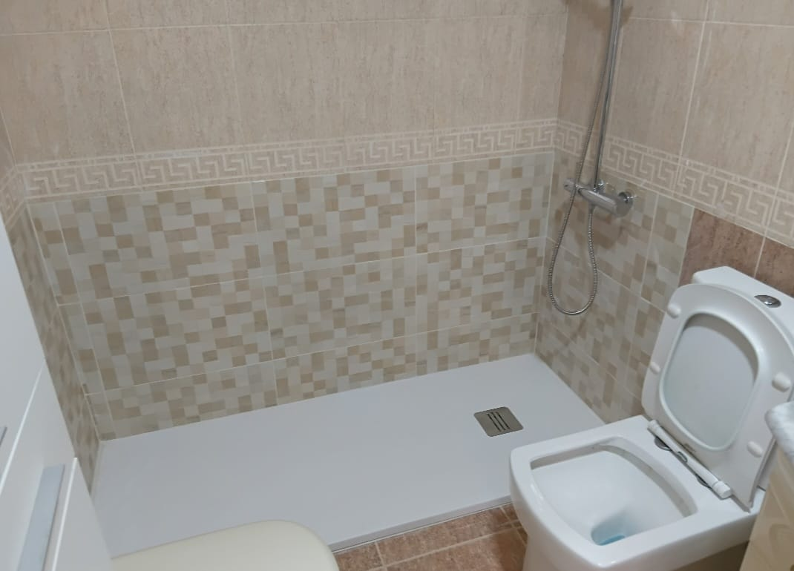
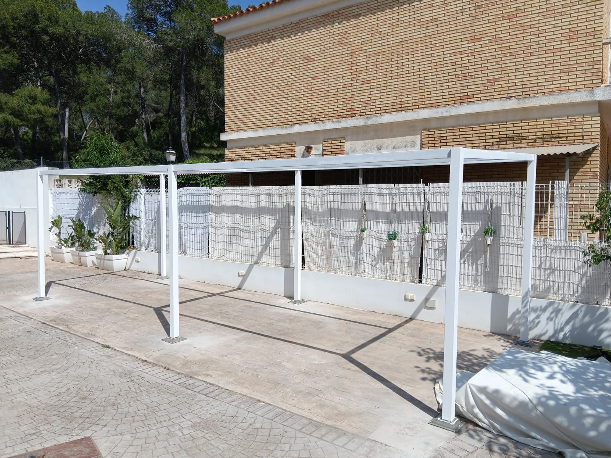
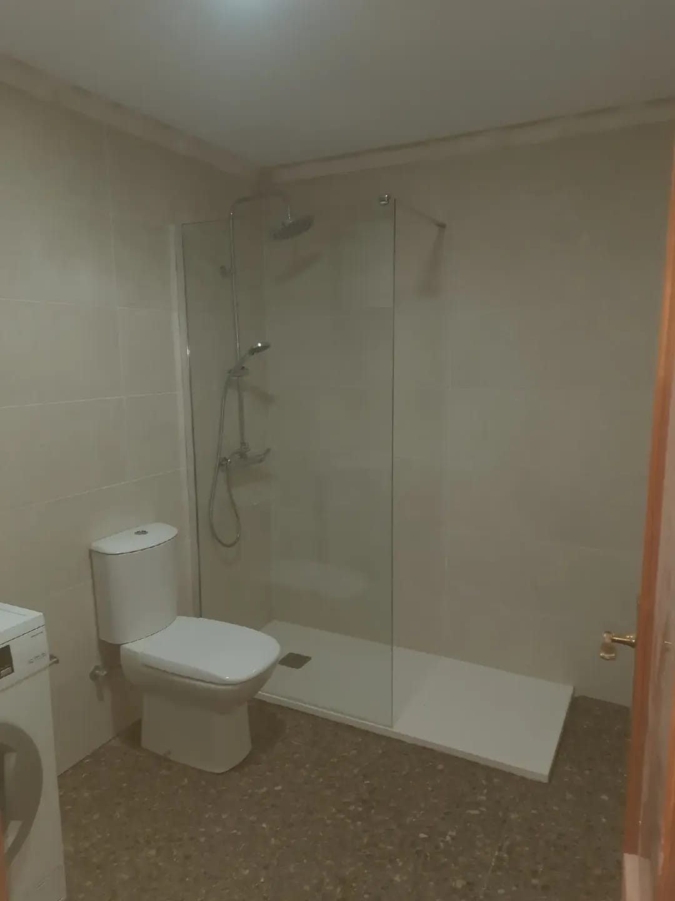
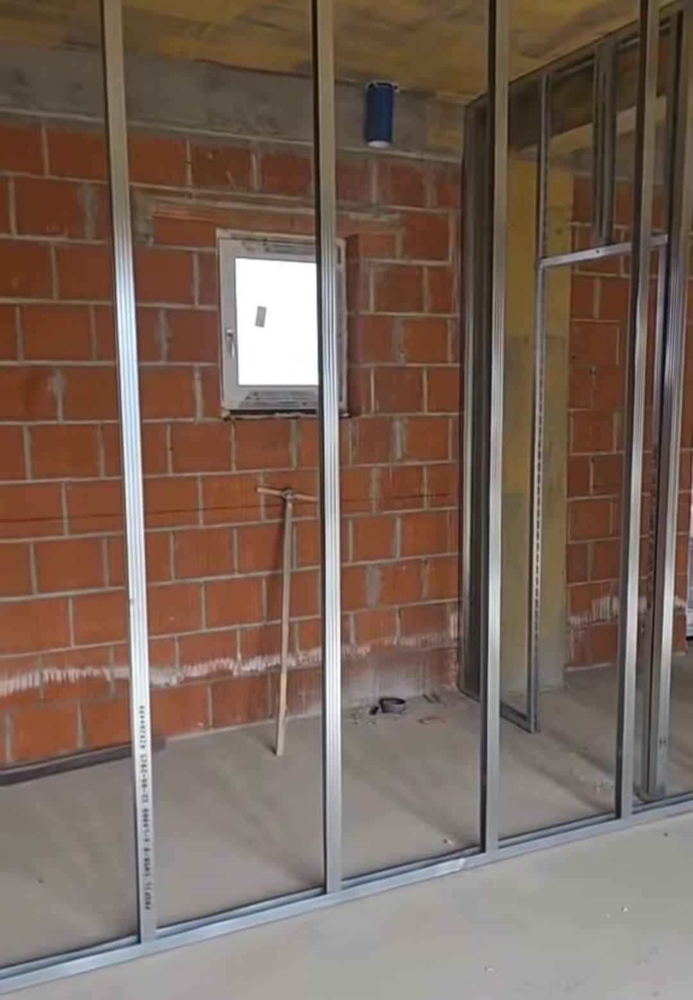
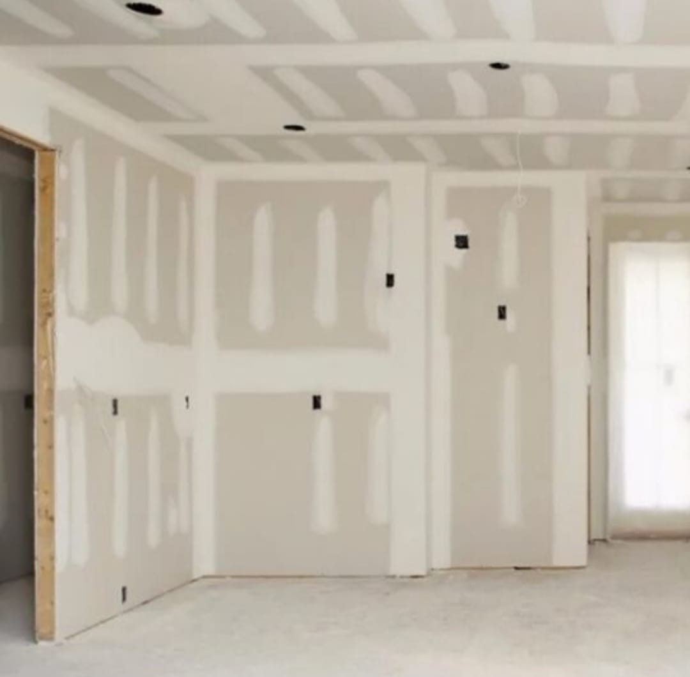

Proyectos y Obras en Valencia
No publicamos catálogos impersonales ni renders de ordenador. Documentamos cada reforma como un caso real: las dificultades del inmueble, las soluciones técnicas que aplicamos sobre el terreno y el resultado final entregado llave en mano.
Crónicas de Obra Documentadas
Haz clic en cualquier proyecto para leer la historia completa y ver la secuencia fotográfica
 Alginet · Finca Centenaria
7 fotos documentadas
Alginet · Finca Centenaria
7 fotos documentadas
Rehabilitación de Finca Centenaria: Cómo Devolvimos la Vida a una Casa de Campo
Humedades históricas de capilaridad, azulejos desprendidos y un presupuesto optimizado mediante solado sobre puente de unión, Climalit y baño completo.
 Calicanto · Baño de 60 m²
Gran Formato Rectificado
Calicanto · Baño de 60 m²
Gran Formato Rectificado
Sesenta Metros Cuadrados de Baño: La Precisión del Gran Formato sin Margen de Error
Transformación en chalet unifamiliar con fontanería multicapa empotrada, cuñas de nivelación milimétrica continua, sanitarios suspendidos y cielo raso de pladur.

Faura · Pladur & Asistencia Obra Limpia en 4 DíasConstruir con Empatía: Cómo un Tabique de Pladur Devolvió la Calma a una Familia
Creación de un dormitorio independiente en el salón para una persona convaleciente, con lana mineral acústica, clóset estructurado en metal y pintura azul sereno.

Benetússer · Ducha en 48h Plato Pizarra C3Seguridad en 48 Horas: Adiós a la Bañera Peligrosa con Cenefa Clásica
Supresión exprés de bañera de fundición, recrecido impermeabilizante con membrana elástica, plato antideslizante C3 y cenefa ornamental de greca griega.

Torrent · Chalet Unifamiliar Panel SándwichAcero, Sombra y Electricidad Oculta: La Pérgola que Conquistó el Jardín
Estructura autoportante de acero soldado con anclajes químicos en solera, canalización eléctrica embutida y techumbre aislante en panel sándwich térmico.

Canet & Sagunto · 2 Casos Terrazo & RescateRespetar lo Bueno y Rescatar lo Abandonado: Lecciones en el Camp de Morvedre
Ducha a ras con mampara fija respetando el terrazo pulido original en Canet; y replanteo de alicatado tras una obra que otra cuadrilla dejó a medias en Sagunto.
Portfolio de Especialidades de Taller
Detalles de ejecuciones directas: baños porcelánicos, pladur técnico, soleras regleadas y carpinterías.
 Baño de Autor
Baño de Autor
Ducha de Gran Formato con Vetas de Mármol
Plato de resina a ras de suelo con desagüe lineal oculto, grifería empotrada en negro mate y porcelánico rectificado.
 Pladur Técnico
Pladur Técnico
Tabiquería y Pasos de Luz en Pladur
Montaje de tabiquería con perfilería galvanizada reforzada y huecos arquitectónicos para cristaleras interiores.
 Alicatado de Precisión
Alicatado de Precisión
Alicatado con Cuñas Autonivelantes
Proceso de nivelación milimétrica para evitar cejas y garantizar planos 100% lisos en paredes porcelánicas.
 Exterior & Chalets
Exterior & Chalets
Pérgola Metálica & Cerramiento Exterior
Estructura para porche exterior en vivienda unifamiliar, anclada sobre solera de hormigón reforzado.
 Cambio de Bañera
Cambio de Bañera
Sustitución de Bañera por Ducha en 48h
Plato de resina antideslizante con textura de pizarra, alicatado coordinado y grifería monomando termostática.
 Albañilería de Base
Albañilería de Base
Nivelación y Recrecido de Soleras
Regleado milimétrico con nivel de burbuja para garantizar que el suelo posterior asiente con máxima estabilidad.
 Pavimentos
Pavimentos
Pavimento Continuo Porcelánico Brillante
Suelo continuo de gran formato con acabado espejo y rodapié empotrado lacado.
 Diseño LED
Diseño LED
Frente de Salón & Fosa LED Perimetral
Estructura en pladur para televisión, fosa de luz ambiental regulable y hornacinas decorativas iluminadas.
 Baño & Hornacina
Baño & Hornacina
Alicatado de Textura Piedra y Hornacina
Reforma de aseo con revestimiento porcelánico tipo pizarra natural, hornacina de ducha a medida e iluminación cálida.
 Techo & Fosa LED
Techo & Fosa LED
Falsos Techos Suspendidos y Fosas de Luz
Estructura suspendida de pladur con candileja perimetral para faja de iluminación LED indirecta continua y aislamiento.

Albañilería TradicionalTabiquería de Ladrillo & Cerramiento Estructural
Ejecución de muros y particiones con mortero de cemento y ladrillo cerámico, plomadas de precisión y enrase técnico.

Porche & TerrazasPavimento Antideslizante C3 para Exteriores
Solado porcelánico de alta resistencia a intemperie con pendientes hacia sumideros lineales y junta de dilatación perimetral.
¿Tienes un proyecto similar en mente?
Envíanos las medidas aproximadas o fotos por WhatsApp y te orientamos sin ningún compromiso.